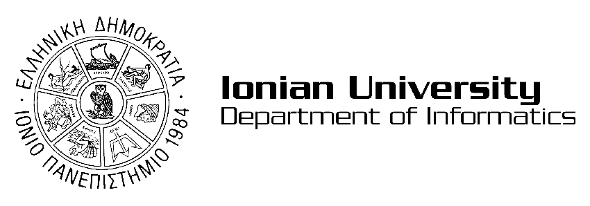

Self-Explaining Transformer Architectures for Legal Document Classification
Under review at Discover Artificial Intelligence, Springer Nature, 2026
Nikolaos Roufas is a Computer Science undergraduate at Ionian University and an AI/ML research assistant working across machine learning, deep learning, explainable AI, natural language processing, and retrieval-augmented generation.
At the Humanistic and Social Informatics Lab (HILab), Ionian University, he works on transformer-based NLP, interpretable machine learning, and scientific AI — including a legal-domain BERT model for named-entity recognition and anonymization, a layer-wise study of transformer explainability, an efficient-attention approach to protein-structure prediction, and an investigation of expressivity, trainability, and gradient scaling in variational quantum classifiers. During an Erasmus+ exchange at Sapienza University of Rome, he conducts research at the PSSM Lab, DIAG, under Prof. Massimo Mecella, where he leads the development of LegalSENN, an intrinsically interpretable transformer architecture for legal document classification. He has also worked in industry as an AI researcher, evaluating large language and multimodal models and building reproducible PyTorch evaluation tooling.
His research has resulted in four peer-reviewed publications and two manuscripts currently under review. He is broadly interested in building AI systems that are accurate, transparent, and reliable enough for real-world deployment.
Self-Explaining Transformer Architectures for Legal Document Classification
Under review at Discover Artificial Intelligence, Springer Nature, 2026
Expressivity, Trainability, and Gradient Scaling in Variational Quantum Classifiers
Under review at Discover Computing, Springer Nature, 2026
LegNER: A Domain-Adapted Transformer for Legal Named Entity Recognition and Text Anonymization
Frontiers in Artificial Intelligence, 8, 1638971, 2025 · Paper
Analyzing Public Discourse and Sentiment in Climate Change Discussions Using Transformer-Based Models
IFIP International Conference on Artificial Intelligence Applications and Innovations (AIAI), pp. 39–53, Springer, 2025 · Paper
Do Deeper Layers Explain Better? An LID-Based Study of Transformer Explainability
IEEE International Conference on Big Data (BigData), pp. 6552–6559, 2025 · Paper
Efficient Protein Folding with Transformer Models Using the Performer Architecture
International Conference on Advances in Information and Communication Technology (ICTA 2025), Lecture Notes in Networks and Systems, Springer, 2026 · Paper

B.Sc. Computer Science, Department of Informatics · 2024–2028 (expected)
Erasmus+ Exchange · Visiting Research Student, DIAG · 2025–2026